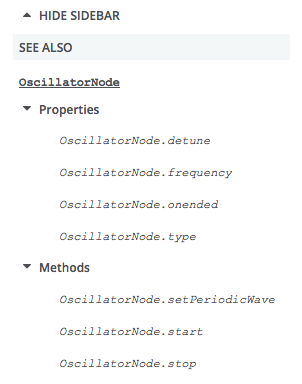

This guide takes you through all you need to know to write an API reference on MDN.
Getting prepared
Before starting to document an API, there are some things you should prepare and plan in advance of starting to actually write.
Prerequisite knowledge
It is assumed that before reading this guide you have a reasonable knowledge of:
- Web technologies like HTML, CSS and JavaScript. JavaScript is most important.
- Reading Web technology specs. You'll be looking at these a lot as you document APIs.
Everything else can be learned along the way.
Prerequisite resources
Before starting to document an API, you should have available:
- The latest spec: Whether it is a W3C Recommendation or an early editor's draft, you should refer to the latest available draft of the spec that covers (or specs that cover) that API. To find it, you can usually do a Web search. The latest version will often be linked to from all versions of the spec, listed under "latest draft" or similar.
- The latest modern web browsers: These should be experimental/alpha builds such as Firefox Nightly/Chrome Canary that are more likely to support the features you are documenting. This is especially pertinent if you are documenting a nascent/experimental API.
- Demos/blog posts/other info: Find as much info as you can.
- Useful engineering contacts: It is really useful to find yourself a friendly engineering contact to ask questions about the spec, someone who is involved in the standardization of the API, or its implementation in a browser. Good places to find them are:
- Your internal company address book, if you work for a relevant company.
- A public mailing list that is involved in the discussion of that API, such as Mozilla's dev-platform or dev-webapi lists, or a W3C list like public-webapps.
- The spec itself. For example, the Web Audio API spec lists the authors and their contact details at the top.
Take some time to play with the API
You will return to building demos many times through the course of documenting an API, but it is useful to start by spending time familiarizing yourself with how the API works — learn what the main interfaces/properties/methods are, what the primary use cases are, and how to write simple functionality with it.
When an API has changed, you need to be careful that existing demos you refer to or learn from are not out of date. Check the main constructs that are used in the demo to see if they match up to the latest spec. They may also not work in up-to-date browsers, but this is not a very reliable test, as often the old features continue to be supported for backwards compatibility.
Note: If the spec has been recently updated so that, say, a method is now defined differently, but the old method still works in browsers, you will often have to document both in the same place, so that the old and new methods are covered. If you need help, refer to demos you have found, or ask an engineering contact.
Create the list of documents you need to write or update
Reference documents for an API are quite numerous. There is an overview page for the API, a page for each interface, one for each method (including constructors) and property (including event handlers properties). There is also one page per event.
Overview page
The API overview page described the role of the API and the top-level interfaces. Its name is NAME OF API and its slug (that is the end part of the URL) must contains at least one space. It is placed at the top level of the API reference (https://developer.mozilla.org/en-US/docs/Web/API)
- Title: Web Audio API
- Slug: Web/API/Web_Audio_API
- Tags: must include the 'Overview' and 'API' tags
Note that most API have a special sidebar with quicklinks. This sidebar lists all interfaces, and possibly tutorials and related API.
Interfaces
Each interface will have its own page too. It will describe the purpose of the interface and lists all constructors, methods, and properties. The title of the page will be the name of the interface (always starting with an uppercase letter), its slug, the interface name, will be at the top level of the API reference (https://developer.mozilla.org/en-US/docs/Web/API)
- Title: AudioContext
- Slug: Web/API/AudioContext
- Tags: must include the API name as a tag (here Web Audio API), as well as Interface.
- Title: AudioNode
- Slug: Web/API/AudioNode
- Tags: must include the API name as a tag (here Web Audio API), as well as Interface.
Note: We document every property and interface appearing in the prototype of an object implementing this interface. This has the following consequences:
- We do not document inherited properties and methods of the interface: they are listed on the respective parent interface. We do hint at their existence though.
- We do document properties and methods defined in mixins, though we use the mixin name as interface name. (This is not optimal as the mixin name will not appear in the console, but prevents the duplication of documentation. We may revisit this in the future.)
- There is one subpage per method, or constructor: if there are several variants, with different parameters, we still create one subpage and use its Syntax section to list all variants.
- Special methods like the stringfier (
toString()) and the jsonizier (toJSON()) are also listed if they do exist. - Named constructors (like
Image()forHTMLImageElement) are also listed, if relevant.
Properties
The set of properties of a given interface can be found on its WebIDL. We document each one in a single page. It will describe the purpose of the property, its syntax, and provide examples of use, in isolation. Its slug is the property name, as a subpage of the interface:
- Title: AudioContext.currentTime
- Slug: Web/API/AudioContext/currentTime
- Tags: must contain the API name as a tag (here Web Audio API), the interface name (here AudioContext) as well as Property. If the property is read-only, like this example, Read-only must be added too.
- Title: AudioNode.numberOfInputs
- Slug: Web/API/AudioNode/numberOfInputs
- Tags: must include the API name as a tag (here Web Audio API), as well as Interface.
Note: Event handlers properties (onXYZ properties) are also listed: they'll have their individual subpage, like any other property.
Methods
Like for properties, methods are listed on the interface's WebIDL and we document each method in a single page. It will describe the purpose of the method, its syntax, and provide examples of use, in isolation. Its slug, without the parenthesis, is the method name, as a subpage of the interface:
- Title: AudioContext.createBuffer() Note the parentheses, making it clear that it is a method.
- Slug: Web/API/AudioContext/createBuffer No parenthesis here.
- Tags: must include the API name as a tag (here Web Audio API), the interface name (here AudioContext) as well as Method.
Constructors
Similar in structure to methods, they also have their own pages. Note that only one unnamed constructor may exist per interface. The title convention is slightly different than the one of methods: it isn't prefixed.
- Title: Worker() Note the parenthesis and the absence of prefix
- Slug: Web/API/Worker/Worker No parenthesis here. Constructors are also subpages of the interface page.
- Tags: must include the API name as a tag (here Web Workers), the interface name (here Worker) as well as Constructor.
Events
Events are the last type of objects needing documentation. Unless the previous documents, event subpages lies under the Web/Events hierarchy. Each event has its own subpage:
- Title: start
- Slug: Web/Events/start
Listing them all
Creating a list of all these subpages is a good way to track them. For example:
- Web_Audio_API
- AudioContext
- AudioContext.currentTime
- AudioContext.destination
- AudioContext.listener
- ...
- AudioContext.createBuffer()
- AudioContext.createBufferSource()
- ...
- AudioNode
- AudioNode.context
- AudioNode.numberOfInputs
- AudioNode.numberOfOutputs
- ...
- AudioNode.connect(Param)
- ...
- AudioParam
- Events (update list)
- start
- end
- …
Each interface in the list has a separate page created for it as a subpage of https://developer.mozilla.org/en-US/docs/Web/API; for example, the document for AudioContext would be located at https://developer.mozilla.org/en-US/docs/Web/API/AudioContext. Each interface page explains what that interface does and provides a list of the methods and properties that comprise the interface. Then each method and property is documented on its own page, which is created as a subpage of the interface it's a member of. For instance, AudioContext.currentTime is documented at https://developer.mozilla.org/en-US/docs/Web/API/AudioContext/currentTime.
For example, given the list above, the AudioContext interface is documented at https://developer.mozilla.org/en-US/docs/Web/API/AudioContext
Create the overview page
Now create the overview (API landing) page:
- Go to https://developer.mozilla.org/en-US/docs/Web/API and, making sure you are logged in, select the Cog icon > New sub-page. You should now be in an editor for a new page.
- Enter the title as the API name as defined by the spec, plus "API". So for example "Web Audio API", "IndexedDB API", or "MediaRecorder API".
- The Slug should be auto-filled, with underscores in the place of spaces. If it isn't, correct it.
- Enter some dummy content into the large content area, such as "TBD" or "Content", then click Save Changes. Or just soar right on into the section Overview page and start filling out the real content right away.
Your landing page now exists! Now all you have to do is fill it in, which is discussed in the next section.
Structure of an overview page
Important: This section is still a proposal, without consensus yet reached. Don't use it yet.
API landing pages will differ greatly in length, depending on how big the API is, but they will all have basically the same features. See https://developer.mozilla.org/en-US/docs/Web/API/Web_Audio_API for an example of a big landing page.
The features of a landing page are outlined below:
- Description: the first paragraph of the landing page should provide a short, concise description of the API's overarching purpose.
- Concepts and usage section: The next section should be titled "[name of API] concepts and usage", and provide an overview of all the main functionality that the API provides, what problems it solves, and how it works — all at a high level. This section should be fairly short, and not go into code or specific implementation details.
- List of interfaces: This section should be titled "[name of API] interfaces", and provide links to the reference page for each interface that makes up the API, along with a short description of what each one does. See the "Referencing other API features with the {{domxref}} macro" section for a quicker way to create new pages. Only current interfaces should be in this list; obsolete ones should be placed in (or moved into, if obsoleted after initially being documented) the following section.
- Obsolete interfaces: This section lists obsolete interfaces. Ed. note: should this be a subsection of the main "Interfaces" section above?
- List of mixins: If any mixins are defined on the API spec, list them under a separate section, as they aren't interfaces as such.
- Example: This section should show a simple use case for the API.
- Specifications table: At this point you need to include a specifications table — see the "Creating a spec reference table" section for more details.
- Browser compatibility: Now you need to include a browser compatibility table. See Compatibility tables for details.
- See also: The "See also" section is a good place to include further links that may be useful when learning about this technology, including MDN (and external) tutorials, examples, libraries, etc.
- Tags: There is a set of standard tags you should include for each reference page — see the "Tags" section for more.
Structure of an interface page
Now you should be ready to start writing your interface pages. Each interface reference page should observe the following structure:
- {{APIRef}}: Include the {{APIRef}} macro in the first line of each interface page, including the name of the API as an argument, so for example {{APIRef("Web Audio API")}}. This macro serves to construct a reference menu on the left hand side of the interface page, including properties and methods, and other quicklinks as defined in the GroupData macro (ask someone to add your API to an existing GroupData entry, or to create a new one, if it isn't already listed there). The menu will look something like the below screenshot.
 - Standardization status: The banner indicating the standardization status should be added next (these can be placed on the same line as the {{APIRef}} macro.):
- {{SeeCompatTable}} for an experimental feature (i.e. the spec is not at the CR level.)
- {{Deprecated_header}}
- {{Obsolete_header}}
- {{Non-standard_header}}
- Description: the first paragraph of the interface page should provide a short concise description of the interface's overarching purpose. You may also want to include a couple more paragraphs if any additional description is required. Note that if the interface defines a mixin, you shouldn't use the term "Interface" to describe it, but mixin instead — it isn't really a standalone interface as such, but a mixin that adds functionality to multiple other interfaces. Similarly, if the interface is actually a dictionary, you should use that term instead of "interface".
- Inheritance diagram: Use the
InheritanceDiagrammacro to embed an SVG inheritance diagram for the interface. For most interfaces, you won't need any parameters, but if the inheritance chain is long, you may need to use {{InheritanceDiagram(600, 120)}} to make room vertically for two rows of boxes. -
List of properties, List of methods: These sections should be titled "Properties" and "Methods", and provide links (using the {{domxref}} macro) to a reference page for each property/method of that interface, along with a description of what each one does. These should be marked up using description/definition lists, which can be created using the "Definition List", "Definition Term", and "Definition Description" buttons on the MDN editor toolbar. Each description should be short and concise — one sentence if possible. See the "Referencing other API features with the {{domxref}} macro" section for a quicker way to create links to other pages.
At the beginning of both sections, before the beginning of the list of properties/methods, indicate inheritance using the appropriate sentence, in italics:
This interface doesn't implement any specific properties, but inherits properties from {{domxref("XYZ")}}, and {{domxref("XYZ2")}}.
This interface also inherits properties from {{domxref("XYZ")}}, and {{domxref("XYZ2")}}.
This interface doesn't implement any specific methods, but inherits methods from {{domxref("XYZ")}}, and {{domxref("XYZ2")}}.
This interface also inherits methods from {{domxref("XYZ")}}, and {{domxref("XYZ2")}}.Note: If the interface features event handlers, put these inside the "Properties" section (they are a type of property) under a subheading of "Event handlers".
Note: Properties that are read-only should have the {{readonlyInline}} macro, which creates a nifty little "Read only" badge, included on the same line as their {{domxref}} links (after the use of the {{experimentalInline}}, {{obsoleteInline}}, {{non-standard_Inline}} and {{deprecatedInline}} macros, if some of these are needed.
- Example: Include a code listing to show typical usage of a major feature of the API. Rather than listing ALL the code, you should list an interesting subset of it. For a complete code listing, you could reference a Github repo containing the full example, and you could also link to a live example created using the Github gh-pages feature (so long as it uses only client-side code of course.) If the example is visual, you could also use the MDN Live Sample feature to make it live and playable in the page.
Note: More details about writing code examples can be found in the "Examples" section.
- Specifications table: At this point you need to include a specifications table — see the "Creating a spec reference table" section for more details.
- Browser compatibility: Now you need to include a browser compatibility table. See Compatibility tables for details.
- Polyfill: If appropriate, include this section, providing code for a polyfill that enables the API to be used even on browsers that don't implement it. If no polyfill exists or is needed, leave this section out entirely.
- See also: The "See also" section is a good place to include further links that may be useful when learning about this technology, including MDN (and external) tutorials, examples, libraries, etc. We have a liberal policy for linking to external sources, but pay attention:
- Do not include pages with the same information as another page in the MDN; link to that page instead.
- Do not put author names — we are a writer-neutral documentation site. Link to the document; the author name will be displayed there.
- Pay special attention to blog posts: they tend to become outdated (old syntax, wrong compat information). Link to them only if they have a clear added value that can't be found in a maintained document.
- Do not use action verb like "See … for more information" or "Click to…", you don't know if your reader is able to see, or to click on the link (like on a paper version of the document).
- Tags: There is a set of standard tags you should include for each reference page — see the "Tags" section for more.
Interface page examples
The following are exemplary examples of Interface pages:
Requestfrom the Fetch API.SpeechSynthesisfrom the Web Speech API.
Structure of a property page
You can now fill in your interface property pages. Since the structures of all of them are the same, it usually works best to open all the property pages for each interface in separate tabs. From here you can fill one in fully, then copy its contents to all the other property pages and just update the bits that need changing, rather than having to fill each one in from scratch.
Edit the property page name to follow the Interface.property_name convention.
Property pages must have the following sections:
- Title: the title of the page must be InterfaceName.propertyName. The interface name must start with a capital letter. Although an interface is implemented in JavaScript on the prototype of objects, we don't include
.prototype.in the title, like we do in the JavaScript reference. - {{APIRef}}: Include the {{APIRef}} macro in the first line of each property page, including the name of the API as an argument, so for example {{APIRef("Web Audio API")}}. This macro serves to construct a reference menu on the left hand side of the interface page, including properties and methods, and other quicklinks as defined in the GroupData macro (ask someone to add your API to an existing GroupData entry, or to create a new one, if it isn't already listed there). The menu will look something like the below screenshot.
- Standardization status: The banner indicating the standardization status should be added next to the interface name (these can be placed on the same line as the {{APIRef}} macro):
- {{SeeCompatTable}} for an experimental feature (i.e. the spec is not at the CR level.)
- {{Deprecated_header}}
- {{Obsolete_header}}
- {{Non-standard_header}}
- Description: the first paragraph of the property page should provide a short, concise description of the property's overarching purpose. You may also want to include a couple more paragraphs if any additional description is required. Obvious extra information to include is its default/initial value, and whether it's read only or not. The structure of the first sentence must be:
- For read-only properties
- The
InterfaceName.propertyread-only property returns a {{domxref("type")}} that... - For other properties
- The
InterfaceName.propertyproperty is a {{domxref("type")}} that…
Note:InterfaceName.propertyshould be in<code>, and should additionally be in bold (<strong>) the first time it's used. - Syntax: The syntax section should show how to get the property, and how to set it, if it's not read only. Use the
syntaxboxclass for it and italics for part to be replaced by the actual variable name. For example:var myType = oscillator.type; oscillator.type = aType;
The syntax section should also have a subsection — "Value", which will contain a description of the property's value. This should contain the data type of the property, and what it represents. For an example, seeSpeechRecognition.grammars -
Example: Include a code listing to show typical usage of the property in question. You should start with a simple example that shows how an object of the type is created and how to access the property. More complex examples can be added after such an example. In these additional examples, rather than listing ALL the code, you should list an interesting subset of it. For a complete code listing, you can reference a Github repo containing the full example, and you could also link to a live example created using the github gh-pages feature (so long as it uses only client-side code of course.) You can also make use of the MDN Sample Server, which is particularly helpful for more complex samples. If the example is visual, you could also use the MDN Live Sample feature to make it live and playable in the page.
Note: If you make use of Github, the example must live under github.com/mdn. See the "Examples" section for more details. - Specifications table: At this point you need to include a specifications table — see the "Creating a spec reference table" section for more details.
- Browser compatibility: Now you need to include a browser compatibility table. See Compatibility tables for details.
- See also: The "See also" section is a good place to include further links that may be useful when using this technology: like methods and properties affected by a change of this property or events thrown in relation to it. More links useful when learning about this technology, including MDN (and external) tutorials, examples, libraries,… can be added, though it may be useful to consider adding them on the interface reference page instead.
- Tags: There is a set of standard tags you should include for each property page — see the "Tags" section for more.
Property page examples
The following are exemplary examples of property pages:
Request.methodfrom the Fetch API.SpeechSynthesis.speakingfrom the Web Speech API.
Structure of a method page
You can now fill in your interface method pages. Since the structure of all of them are the same, one possible way of doing it is to open all the method pages for each interface in separate tabs. From here you can fill one in fully, then copy its contents to all the other method pages and just update the bits that need changing, rather than having to fill each one in from scratch.
Method pages need the following sections:
- Title: the title of the page must be InterfaceName.method() (with the two terminal parentheses), but the slug (the end of the page URL) must not include the brackets. Also the interface name must start with a capital. Although an interface is implemented in JavaScript on the prototype of objects, we don't put
.prototype.in the title, like we do in the JavaScript reference. - {{APIRef}}: Include the {{APIRef}} macro in the first line of each method page, including the name of the API as an argument, so for example {{APIRef("Web Audio API")}}. This macro serves to construct a reference menu on the left hand side of the interface page, including properties and methods, and other quicklinks as defined in the GroupData macro (ask someone to add your API to an existing GroupData entry, or to create a new one, if it isn't already listed there). The menu will look something like the below screenshot.
- Standardization status: Next, the banner indicating the standardization status should be added (these can be placed on the same line as the {{APIRef}} macro):
- {{SeeCompatTable}} for an experimental feature (i.e. the spec is not at the CR level.)
- {{Deprecated_header}}
- {{Obsolete_header}}
- {{Non-standard_header}}
- Description: The first paragraph of the method page should provide a short concise description of the method's overarching purpose. You may also want to include a couple more paragraphs if any additional description is required. Obvious extra information to include is its default parameter values, any theory that the method relies on, and what the parameter values do.
- The beginning of the first sentence must follow the following structure:
- The InterfaceName.method() method interface ...
Note:InterfaceName.method()should be in<code>, and should also be in bold (<strong>) the first time it's used. - Syntax: The syntax section should include a 2–3 line example — usually just construction of the interface, then calling of the interface method.
- The syntax should be of the form:
- var <em>returnValue</em> = <em>ifName</em>.method(<em>param1</em>, <em>param2</em>, ...)
- If the method has no return value (
voidas return value in the webidl), use: - <em>ifName</em>.method(<em>param1</em>, <em>param2</em>, ...)
SubtleCrypto.sign()for an example):- "Parameters": This should contain a definition list (or unordered list) that names and describes the different parameters the method takes. You should include the Optional macro next to the parameter name, in the case of optional parameters. If there are no parameters, this section should be omitted.
- "Return value": This should say what return value the method has, be it a simple value like a double or boolean, or a more complex value like another interface object, in which case you can use {{domxref}} macro to link to the MDN API page covering that interface (if it exists.) A method might return nothing, in which case the return value should be written as "{{jsxref('undefined')}}" (which will look like this in the rendered page:
undefined). - "Exceptions": This should list the different exceptions that can be raised when invoking the method, and what circumstances cause them. If there are no exceptions, this section should be omitted.
- Example: Include a code listing to show typical usage of the method in question. Rather than listing ALL the code, you should list an interesting subset of it. For a complete code listing, you should reference a Github repo containing the full example, and you could also link to a live example created using the Github gh-pages feature (so long as it uses only client-side code of course.) You can also make use of the MDN Sample Server, which is particularly helpful for more complex samples. See the "Examples" section for more details. If the example is visual, you could also use the MDN Live Sample feature to make it live and playable in the page.
- Specifications table: At this point you need to include a specifications table — see the "Creating a spec reference table" section for more details.
- Browser compatibility: Now you need to include a browser compatibility table. See Compatibility tables for details.
- Polyfill: If appropriate (especially if common browsers are still shipping without support for the method), you can include a section which includes the code for a polyfill to allow the API to be used in browsers that don't implement it.
Method page examples
The following are exemplary examples of Interface pages:
Document.getAnimations()from the Web Animations API.GlobalFetch.fetch()from the Fetch API.
Tagging
For API reference pages, there are standard tags that all pages should have:
- "API"
- "Reference"
- Name of API (e.g. "Web Audio API")
- Any pertinent related keywords (e.g. "audio")
For Interface pages, also add:
- "Interface"
- The name of the interface, e.g. "AudioContext"
For method pages, also add:
- "Method"
- The name of the interface the method relates to, e.g. "AudioContext"
- The name of the method, e.g. "createBuffer"
For property pages, also add:
- "Property"
- The name of the interface the property relates to, e.g. "AudioContext"
- The name of the property, e.g. "currentTime"
In all cases, also add a keyword indicating the standardization status:
- Experimental (if the spec is not a CR)
- Deprecated
- Obsolete
- Non-standard
These tags will be used to generate correct quicklinks, with nice icons. See How to properly tag pages for additional information on tagging, as well as about other tags you may find useful.